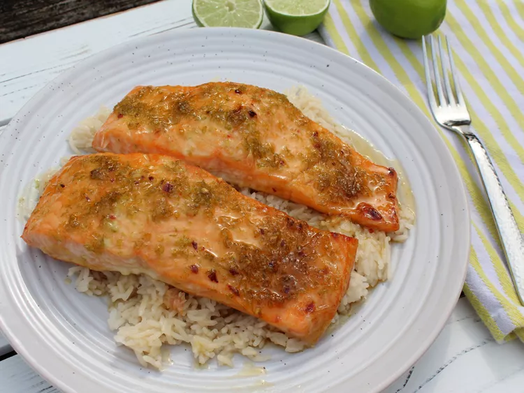

Honey Lime Salmon

Description
This honey lime salmon, with honey, lime juice, lime zest, and red pepper flakes adds a zing of flavor to baked salmon. Serve it over rice if you like, with the pan juices poured over.
Ingredients
- 3 tablespoons honey
- 1 tablespoon lime zest, from about 2 limes
- 1/4 teaspoon red pepper flakes
- 1 pound salmon filets, without skin
steps
- Step 1: Preheat the oven to 400 degrees F (200 degrees C).
- Step 2: Stir honey, lime juice, lime zest, and red pepper flakes together in a small bowl until smooth. Place salmon in a shallow glass baking dish and coat with the honey mixture.
- Step 3: Bake in the preheated oven, uncovered, until fish flakes easily with a fork and an instant-read thermometer inserted near the center reads 145 degrees F (63 degrees C), 15 to 20 minutes.